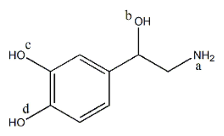
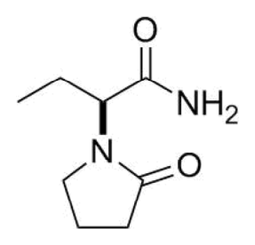
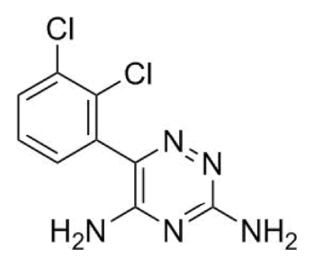
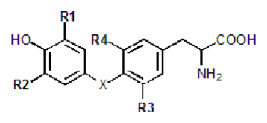

開卷有益 ／
藥師 ／ 藥理學與藥物化學 ／ 109 年第 1 次109 年第 1 次藥師藥理學與藥物化學試題與答案
這一頁是民國 109 年第 1 次藥師藥理學與藥物化學的整份歷屆試題，共 80 題，題目與標準答案出自考選部「國家考試試題及測驗式試題答案」開放資料，其中 77 題附有詳解。以下逐題列出題幹、選項與答案；要計時作答或記錄成績，請用線上練習。
考選部原始場次代碼：109020
線上作答這一科 →
全部 80 題
第 1 題
在藥物通過細胞膜的方式中， partition coefficient是下列何種分子運送的主要決定因素？
（A） aqueous diffusion（B） lipid diffusion（C） special carrier（D） endocytosis答案：（B）
詳解與考點 正解：partition coefficient 反映藥物在脂相與水相間的分配傾向，最直接決定其穿越磷脂雙層的能力。脂溶性越高，未離子化藥物越容易溶入細胞膜並以被動方式跨膜，因此主要決定 lipid diffusion，故選 B。
A：aqueous diffusion 是藥物經水性孔道或水相移動，主要受濃度梯度、分子大小與孔道性質影響，不以脂水分配為主要判準。
C：special carrier 依賴載體的專一性、飽和性與競爭抑制；即使藥物具脂溶性，也不能取代載體辨識。
D：endocytosis 是細胞以囊泡包裹大分子或顆粒的運輸，驅動因素是囊泡形成，不是藥物的 partition coefficient。
本題考點：脂質擴散（lipid diffusion）——判斷小分子能否直接穿膜時，先看未離子化比例與脂水分配係數；被動運輸與載體運輸（passive diffusion versus carrier-mediated transport）——前者不飽和，後者會受載體容量與競爭限制。
第 2 題
當一口服藥物，以每6小時服用200 mg改成以每8小時服用400 mg時，會改變下列何種情況？
（A） 半衰期（B） 口服吸收率（C） 清除率（D） 血中濃度答案：（D）
詳解與考點 正解：原處方每日總量為 200 mg / 6 h × 24 h = 800 mg/day；新處方為 400 mg / 8 h × 24 h = 1,200 mg/day，且給藥間隔也由 6 h 改為 8 h。穩定狀態平均濃度 Css,avg = F × Dose/(CL × τ)，因此劑量與 τ 同時改變會改變平均濃度，峰濃度與谷濃度也會改變，故選 D。
A：半衰期由消除速率常數或 Vd 與 CL 決定；未改變藥物或病人的消除條件時，調整劑量與間隔不會改變 t½。
B：口服吸收率是藥物與製劑的吸收特性；同一口服藥僅改變單次劑量與間隔，不能據此判定 F 改變。
C：清除率反映單位時間清除藥物的能力，並非由給藥時程本身決定；本題沒有提供會使 CL 改變的交互作用或器官功能線索。
本題考點：穩定狀態平均濃度（average steady-state concentration）——Css,avg = F × Dose/(CL × τ)，改變單次劑量或給藥間隔都要重新看 Dose/τ；半衰期與清除率（half-life and clearance）——在藥物動力學參數不變時，改處方頻率改的是濃度波動，不是藥物本身的消除能力。
第 3 題
當使用ammonium chloride改變尿液之酸鹼值後，下列何種藥物在腎臟的排泄會增加？
（A） cromolyn（B） desipramine（C） diazepam（D） levodopa答案：（B）
詳解與考點 正解：ammonium chloride 使尿液酸化，弱鹼在酸性尿中較易質子化成帶電型，腎小管再吸收下降，因而增加尿中排泄。desipramine 為三環抗憂鬱劑中的弱鹼，符合酸化尿液後離子捕捉增加排泄的方向，故選 B。
A：cromolyn 具有酸性官能基；尿液酸化會使弱酸較偏向未離子化型，方向上不會造成弱鹼型的離子捕捉增加排泄。
C：diazepam 的體內清除以肝臟代謝為主，不能把尿液酸化後弱鹼的典型腎排泄規則直接套用為其主要排泄變化。
D：levodopa 具有酸性與鹼性官能基，且主要經代謝處理；其排泄不以酸化尿液後弱鹼離子捕捉作為主要判準。
本題考點：離子捕捉（ion trapping）——要增加弱鹼的腎排泄就酸化尿液，使其轉為不易再吸收的帶電型；腎小管再吸收（renal tubular reabsorption）——尿液 pH 的影響要先看藥物是弱酸、弱鹼或兩性分子，再判斷未離子化比例。
第 4 題
下列敘述何者錯誤？
（A） metronidazole只對厭氧細菌有效（B） metronidazole與rifaximin皆能抑制DNA的合成而達到抑菌效果（C） metronidazole會產生類似disulfiram所造成的酒精代謝症狀（D） rifaximin對革蘭氏陰性或陽性菌皆有效答案：（A）
詳解與考點 本題經考選部公告一律給分。(B)稱metronidazole與rifaximin皆抑制DNA合成，惟rifaximin實際作用機轉為抑制細菌RNA聚合酶而非DNA合成，此敘述明顯有誤；然(A)稱metronidazole「只對厭氧細菌有效」亦有疑義，因metronidazole對多種厭氧原蟲（如陰道滴蟲、阿米巴原蟲）同樣具活性，非僅限厭氧細菌，是否構成「錯誤」與(B)同時存在爭議，難以判定題目所指單一錯誤選項。(C)disulfiram-like反應與(D)rifaximin廣效性皆符合標準藥理學敘述。作答以現行藥理學抗厭氧菌藥物教材為準。
第 5 題
有關aminoglycosides類抗生素敘述，下列何者錯誤？
（A） 在鹼性環境中效用較強（B） 可以與β-lactam類抗生素一起併用於對革蘭氏陰性與陽性菌抗藥性菌株（C） streptomycin、kanamycin、gentamicin、azithromycin皆屬aminoglycosides可以抑制細菌蛋白質生成（D） 與tetracyclines一樣可抑制蛋白質生成，皆作用在30S而非50S核糖體RNA答案：（C）
詳解與考點 正解：關鍵在 aminoglycosides 的成員與核糖體作用位置。streptomycin、kanamycin、gentamicin 都是 aminoglycosides，結合 30S 核糖體而抑制細菌蛋白質合成；但 azithromycin 是 macrolide，主要作用於 50S 核糖體。把 azithromycin 一併列為 aminoglycosides，分類與作用位置都混淆，故選 C。
A：aminoglycosides 的抗菌作用在鹼性環境較強；酸性環境會降低細菌對此類藥物的攝取與效用，敘述方向正確。
B：β-lactam 破壞細胞壁後可增加 aminoglycosides 進入細菌的機會，兩類藥可形成協同抗菌效果；分辨關鍵在一者作用細胞壁、另一者作用 30S。
D：tetracyclines 與 aminoglycosides 都以 30S 為主要作用位置，皆會抑制蛋白質生成；兩者在 30S 的結合方式不同，但不是 50S 抑制劑。
本題考點：aminoglycosides（aminoglycosides）——先辨識 streptomycin、kanamycin、gentamicin 為 30S 抑制劑，再排除 macrolides；macrolides（macrolides）——azithromycin 屬 50S 抑制劑，名稱相近的抗生素分類不能只靠共同的蛋白質合成抑制效果；抗菌協同作用（antibiotic synergy）——β-lactam 的細胞壁破壞可促進 aminoglycoside 進入細菌。
第 6 題
有關anthracyclines的敘述，下列何者錯誤？
（A） 可抑制第二型拓墣異構酶（topoisomerase II）（B） 能經由結合DNA而阻斷細胞中DNA及RNA的合成（C） 產生之心臟毒性副作用主要是由於增加氧自由基所引起（D） 腎功能不佳之病患須減量使用答案：（D）
詳解與考點 正解：anthracyclines 的代表性毒性與處置重點在 DNA 作用與心臟毒性，不是以腎功能作為主要減量依據。此類藥經肝臟代謝並以膽汁排泄為主，劑量調整主要關注肝功能與累積心臟毒性；僅因腎功能不佳就宣稱須減量，敘述過度概括，故選 D。
A：anthracyclines 可抑制 topoisomerase II，使 DNA 複製與修復受阻，是其重要抗腫瘤機轉。
B：anthracyclines 可嵌入 DNA 雙股之間，干擾 DNA 與 RNA 的合成；與 topoisomerase II 抑制共同造成細胞毒性。
C：心臟毒性與氧自由基造成的氧化傷害有關，這也是累積劑量需要謹慎評估的原因。
本題考點：anthracyclines（anthracyclines）——看到 topoisomerase II、DNA intercalation 與自由基時，要連結到同一類抗腫瘤藥；器官功能劑量調整（organ-function dose adjustment）——判斷是否減量要先看主要代謝與排泄途徑，不能把肝臟清除為主的藥一律套成腎功能減量。
第 7 題
關於黑色素瘤（malignant melanoma）的治療，下列敘述何者錯誤？
（A） nivolumab可用來治療轉移性黑色素瘤（B） ipilimumab結合到T細胞上的PD-1受體而活化T細胞，以達到毒殺腫瘤的目的（C） vemurafenib為BRAF V600E抑制劑，用在轉移性黑色素瘤（D） trametinib為MEK1/2抑制劑，用在轉移性黑色素瘤答案：（B）
詳解與考點 正解：本題考的是免疫檢查點抑制劑的受體對應。ipilimumab 阻斷的是 T 細胞上的 CTLA-4；PD-1 抑制劑則是 nivolumab 等藥物。把 ipilimumab 說成結合 PD-1，將兩個檢查點與藥物配錯，故選 B。
A：nivolumab 為 PD-1 抑制劑，可用於轉移性黑色素瘤的免疫治療。
C：vemurafenib 針對帶有 BRAF V600E 突變的黑色素瘤，作用位置是 BRAF，不是免疫檢查點。
D：trametinib 抑制 MEK1/2，位於 BRAF 下游的 MAPK 訊號路徑，可用於轉移性黑色素瘤相關治療。
本題考點：免疫檢查點抑制劑（immune checkpoint inhibitors）——以受體配對辨識 CTLA-4 對 ipilimumab、PD-1 對 nivolumab；MAPK 路徑標靶治療（MAPK pathway targeted therapy）——BRAF V600E 抑制劑與 MEK1/2 抑制劑分別卡在同一路徑的不同位置。
第 8 題
下列抗黴菌藥物和機制的配對，何者正確？
（A） amphotericin B－抑制cytochrome P450酵素而抑制細胞膜成分麥角固醇（ergosterol）生成（B） caspofungin－抑制β-glucan synthase進而抑制細胞壁生成（C） fluconazole－造成細胞膜穿孔，使細胞膜通透性增加而殺菌（D） terbinafine－抑制有絲分裂答案：（B）
詳解與考點 正解：caspofungin 屬 echinocandin，抑制 β-glucan synthase，阻斷真菌細胞壁 β-glucan 的生成。細胞壁是其主要作用位置，與其他選項所述的細胞膜或有絲分裂機轉不同，故選 B。
A：amphotericin B 直接結合細胞膜上的 ergosterol 並形成孔洞；抑制 cytochrome P450 與 ergosterol 合成的是 azole 類藥物。
C：fluconazole 是 azole 類，抑制真菌 cytochrome P450 相關去甲基化反應而減少 ergosterol 合成，不是直接在細胞膜穿孔。
D：terbinafine 抑制 squalene epoxidase，阻斷 ergosterol 合成的較早步驟；抑制有絲分裂的是 griseofulvin。
本題考點：echinocandins（echinocandins）——看到 β-glucan synthase 就連結到真菌細胞壁抑制；抗黴菌藥作用位置（antifungal drug targets）——amphotericin B 破壞 ergosterol 細胞膜、azoles 與 terbinafine 抑制 ergosterol 合成，須分清合成步驟與直接穿孔。
第 9 題
下列何種藥物可以減少penicillins類抗生素由腎小管分泌方式排出，而有助於延長penicillins之藥效？
（A） allopurinol（B） cilastatin（C） probenecid（D） procaine答案：（C）
詳解與考點 正解：penicillins 可經近端腎小管的有機陰離子運輸系統分泌；probenecid 競爭此運輸，減少 penicillins 的小管分泌，因此可延長其血中濃度與藥效，故選 C。
A：allopurinol 抑制 xanthine oxidase，用於降低尿酸生成，並非以抑制 penicillins 腎小管分泌來延長藥效。
B：cilastatin 抑制腎臟 dehydropeptidase I，目的是防止 imipenem 在腎臟被代謝，與阻斷 penicillins 的有機陰離子分泌不同。
D：procaine 與某些長效 penicillin 注射製劑併用時可延緩肌肉注射處的吸收；它不是藉腎小管分泌抑制延長 penicillins 藥效。
本題考點：有機陰離子運輸（organic anion transport）——遇到 penicillins 與 probenecid，判斷為近端腎小管分泌競爭；藥物交互作用機轉（drug interaction mechanisms）——延長藥效可來自減少腎排泄、減少代謝或延緩吸收，必須依作用位置區分。
第 10 題
下列抗血小板藥物何者為抑制血小板表面之GP IIb/IIIa醣蛋白功能？
（A） eptifibatide（B） dipyridamole（C） ticlopidine（D） aspirin答案：（A）
詳解與考點 正解：eptifibatide 直接拮抗血小板表面的 glycoprotein IIb/IIIa，阻止 fibrinogen 介導的血小板交聯與聚集。題目指定 GP IIb/IIIa 時，應直接對應 eptifibatide，故選 A。
B：dipyridamole 抑制 phosphodiesterase 並增加 adenosine 作用，使血小板內 cAMP 上升；它不直接阻斷 GP IIb/IIIa。
C：ticlopidine 不可逆抑制 ADP 的 P2Y12 受體，阻斷位置在 ADP 訊號而非最終的 GP IIb/IIIa 聚集受體。
D：aspirin 不可逆抑制血小板 COX-1，減少 thromboxane A2 生成；它同樣不是 GP IIb/IIIa 拮抗劑。
本題考點：GP IIb/IIIa 拮抗劑（glycoprotein IIb/IIIa antagonists）——看到最終 fibrinogen 交聯受體時，辨識 eptifibatide；抗血小板藥作用位置（antiplatelet drug targets）——P2Y12、COX-1、phosphodiesterase 與 GP IIb/IIIa 分別位於不同的血小板活化或聚集步驟。
第 11 題
有關降血脂針對proprotein convertase subtilisin/kexin type 9（PCSK9）之抗體藥物，其可能誘發之副作用，下 列何者錯誤？
（A） 類流感症狀（flu-like symptoms）（B） 鼻咽炎（nasopharyngitis）（C） 膽結石（gallstones）（D） 眼疾（ophthalmologic events）答案：（C）
詳解與考點 正解：PCSK9 抗體藥物藉由保留 LDL receptor 而降低 LDL-C；其不良反應判讀要區分常見安全性訊號與其他降血脂藥的典型問題。膽結石不是此類單株抗體的典型可能誘發副作用，故選 C。
A：類流感症狀可見於 PCSK9 抗體藥物的安全性資料，雖不具專一性，不能因此排除。
B：鼻咽炎是此類藥物常被列出的不良反應之一，與膽結石的判斷不同。
D：眼疾屬題目所列的可能安全性事件；不常見不等於與 PCSK9 抗體藥物完全無關，故不能以發生率低排除。
本題考點：PCSK9 抗體（PCSK9 monoclonal antibodies）——先以增加 LDL receptor 回收辨識其降脂機轉，再分開判讀療效與不良反應；藥物安全性訊號（drug safety signal）——題目問「可能誘發」時，要區分已知安全性事件與其他藥物類別的典型副作用。
第 12 題
Deferoxamine為臨床上用於下列何種金屬中毒之解藥？
（A） iron（B） copper（C） zinc（D） lead答案：（A）
詳解與考點 正解：deferoxamine 是螯合 iron 的解毒劑，可與鐵形成可排泄的複合物，因此用於鐵中毒，故選 A。
B：copper 中毒的螯合治療以 penicillamine 或 trientine 為代表，deferoxamine 並非其標準對應解毒劑。
C：zinc 不是 deferoxamine 的臨床主要螯合對象，不能因其同屬金屬而直接類推。
D：lead 中毒常用可螯合鉛的藥物，例如 calcium disodium EDTA、dimercaprol 或 succimer；deferoxamine 的選擇性不同。
本題考點：金屬螯合治療（metal chelation therapy）——解毒劑題先把金屬與其高親和力螯合劑配對，不能只按「都是重金屬」判斷；deferoxamine（deferoxamine）——看到急性 iron 中毒時，優先連結此鐵螯合劑。
第 13 題
下列藥物何者可以活化腦下垂體前葉之somatostatin受體而抑制生長激素（growth hormone）生成及釋放，用 於治療末端肥大症（acromegaly）？
（A） octreotide（B） cabergoline（C） pegvisomant（D） goserelin答案：（A）
詳解與考點 正解：octreotide 是 somatostatin 類似物，活化腦下垂體前葉的 somatostatin receptor，抑制 growth hormone 的生成與釋放，可用於末端肥大症，故選 A。
B：cabergoline 為 dopamine D2 receptor agonist，可影響 prolactin，並非以活化 somatostatin receptor 為主要機轉。
C：pegvisomant 拮抗周邊的 growth hormone receptor，阻斷的是生長激素的受體作用，不是抑制腦下垂體前葉分泌。
D：goserelin 是 GnRH agonist，持續給藥後抑制 gonadotropins，主要用於性腺軸相關疾病，作用受體不是 somatostatin receptor。
本題考點：somatostatin 類似物（somatostatin analogs）——末端肥大症題若問直接抑制 GH 分泌，選活化 somatostatin receptor 的 octreotide；生長激素治療標的（growth hormone therapeutic targets）——要區分抑制腦下垂體分泌與拮抗周邊 GH receptor，兩者作用位置不同。
第 14 題
下列有關抗甲狀腺藥物iodides之敘述，何者正確？
（A） 可以抑制甲狀腺釋放T3及T4（B） 可加強131I破壞甲狀腺（C） 常於甲狀腺切除手術後使用（D） 不適用於治療甲狀腺風暴（thyroid storm）答案：（A）
詳解與考點 正解：高劑量 iodides 可迅速抑制甲狀腺激素的釋放，亦會暫時抑制甲狀腺內碘的有機化，因此可降低 T3 與 T4 的釋放；此急性效應可用於甲狀腺風暴的處置，故選 A。
B：iodides 會抑制甲狀腺攝取與利用碘，可能干擾 131I 的作用，不能用來加強其破壞甲狀腺的效果。
C：iodides 可在甲狀腺手術前用以降低腺體血流與血管性；題幹說成手術後常規使用，時間點不對。
D：甲狀腺風暴需要快速抑制激素釋放時可使用 iodides；分辨關鍵在先以 thionamide 阻斷新合成，再給 iodides 抑制釋放。
本題考點：碘化物急性作用（acute iodide effect）——甲狀腺風暴時以抑制激素釋放判斷 iodides 的角色；甲狀腺治療時序（thyroid treatment sequencing）——iodides 會阻礙放射性碘利用，並應在 thionamide 後給予，不能把不同治療目的混用。
第 15 題
下列有關mifepristone之敘述，何者正確？
（A） 主要拮抗子宮之estrogen receptor而致墮胎（B） 常和misoprostol合併使用以增強墮胎效果（C） 可活化glucocorticoid receptor（D） 於懷孕20週時仍可產生良好墮胎效果答案：（B）
詳解與考點 正解：mifepristone 主要拮抗 progesterone receptor，使妊娠維持所需的黃體素作用下降；與促進子宮收縮及子宮頸成熟的 misoprostol 合併，可增強終止妊娠效果，故選 B。
A：mifepristone 的主要標的是 progesterone receptor，不是 estrogen receptor；兩者都是類固醇受體，但受體選擇性不同。
C：mifepristone 對 glucocorticoid receptor 呈拮抗作用，不是活化該受體。
D：藥物終止妊娠的效果與安全性必須依孕週和合併療法判斷；不能把早期妊娠的標準用途直接概括為懷孕 20 週仍有良好效果。
本題考點：mifepristone（mifepristone）——看到終止妊娠時，先辨識 progesterone receptor antagonism，再連結 misoprostol 的子宮作用；類固醇受體選擇性（steroid receptor selectivity）——progesterone receptor 與 glucocorticoid receptor 的拮抗或活化方向需分開判斷；藥物終止妊娠（medication abortion）——涉及孕週的療效與安全性時，不能脫離特定處方與臨床情境作絕對推論。
第 16 題
下列糖尿病治療藥物何者為sodium-glucose co-transporter 2抑制劑，可以明顯減少近端腎小管再吸收葡萄糖而 使血糖降低？
（A） canagliflozin（B） glipizide（C） rosiglitazone（D） sitagliptin答案：（A）
詳解與考點 正解：關鍵在題幹所述的近端腎小管葡萄糖再吸收，這正是 sodium-glucose cotransporter 2（SGLT2）的功能。（A）canagliflozin 抑制近端腎小管的 SGLT2，使尿糖排出增加而降低血糖，故選 A。
B：glipizide 是 sulfonylurea 類，藉由關閉胰臟 β 細胞的 ATP-sensitive K+ channel 增加胰島素分泌，並非抑制腎小管的葡萄糖轉運。
C：rosiglitazone 為 peroxisome proliferator-activated receptor γ（PPARγ）致效劑，主要提升周邊組織對胰島素的敏感性；降血糖方向相同，但作用位置不是近端腎小管。
D：sitagliptin 抑制 dipeptidyl peptidase-4（DPP-4），延長 incretin 的作用以促進葡萄糖依賴性胰島素分泌，與 SGLT2 無關。
本題考點：SGLT2 抑制劑（SGLT2 inhibitors）——看到近端腎小管、抑制葡萄糖再吸收與尿糖增加時，判作此類藥物；降血糖藥物作用位置——胰島 β 細胞、周邊胰島素敏感性與腎小管葡萄糖轉運分屬不同機轉，不能只依降血糖結果判斷。
第 17 題
有關保鉀利尿劑（potassium-sparing diuretics）使用後之副作用，下列敘述何者錯誤？
（A） triamterene可導致腎結石（kidney stone）（B） spironolactone可導致女樣男乳（gynecomastia）（C） amiloride可誘發高血鉀症（hyperkalemia）（D） 此類藥物可導致代謝性鹼中毒（metabolic alkalosis）答案：（D）
詳解與考點 正解：本題採負向問法。保鉀利尿劑降低集合管的 Na+ 再吸收，因而減少 K+ 與 H+ 分泌，結果傾向高血鉀與代謝性酸中毒；（D）代謝性鹼中毒與此方向相反，故選 D。
A：triamterene 可在尿液中形成結晶，確有增加腎結石的可能，故此敘述正確。
B：spironolactone 具有抗雄性素相關作用，長期使用可造成男性女乳症，故此敘述正確。
C：amiloride 阻斷集合管的 epithelial Na+ channel（ENaC），使鉀離子排泄減少，可能誘發高血鉀症，故此敘述正確。
本題考點：保鉀利尿劑（potassium-sparing diuretics）——判斷酸鹼與電解質時，看到鉀排泄與 H+ 分泌下降，就選高血鉀與代謝性酸中毒的方向；醛固酮拮抗與 ENaC 阻斷——兩者都在遠端腎元減少鈉再吸收，但 spironolactone 的抗雄性素副作用可用來與 amiloride、triamterene 區分。
第 18 題
下列何種利尿劑主要具有抑制腎小管回收NaHCO3之作用？
（A） ethacrynic acid（B） acetazolamide（C） mannitol（D） indapamide答案：（B）
詳解與考點 正解：判準是是否抑制近端腎小管的 carbonic anhydrase。（B）acetazolamide 減少 H+ 形成與分泌，連帶抑制 HCO3- 及 NaHCO3 的再吸收，因此具有題幹所述作用，故選 B。
A：ethacrynic acid 是 loop diuretic，主要抑制粗上行支的 Na+/K+/2Cl- cotransporter，不是以抑制 NaHCO3 再吸收為主。
C：mannitol 為滲透性利尿劑，藉由增加管腔滲透壓帶走水分，並無特異性抑制 NaHCO3 回收的作用。
D：indapamide 為 thiazide-like diuretic，主要抑制遠曲小管的 Na+/Cl- cotransporter，作用部位與轉運蛋白皆不同。
本題考點：碳酸酐酶抑制劑（carbonic anhydrase inhibitors）——題幹若鎖定近端腎小管的 HCO3- 與 NaHCO3 再吸收，優先判作 acetazolamide 類；利尿劑作用部位——loop diuretic、thiazide 類與滲透性利尿劑分別以粗上行支、遠曲小管與管腔滲透壓辨認。
第 19 題
利尿劑hydrochlorothiazide主要作用在腎小管之遠曲小管，為下列何種回收鈉離子機制？
（A） Na+/Cl- cotransporter（B） Na+/K+/2Cl- cotransporter（C） Na+/H+ exchanger（D） Na+ channel答案：（A）
詳解與考點 正解：hydrochlorothiazide 的關鍵作用部位是遠曲小管，該處以（A）Na+/Cl- cotransporter 回收鈉與氯離子；抑制此 transporter 即為 thiazide 類利尿劑的主要機轉，故選 A。
B：Na+/K+/2Cl- cotransporter 位於 Henle 氏環粗上行支，是 loop diuretic 的主要標的，不是 hydrochlorothiazide 的標的。
C：Na+/H+ exchanger 主要參與近端腎小管的鈉回收與酸鹼調節，作用部位不同於題幹指定的遠曲小管。
D：Na+ channel 指集合管主細胞的 epithelial Na+ channel（ENaC），是 amiloride 或 triamterene 的作用位置，不是 thiazide 類。
本題考點：thiazide 利尿劑（thiazide diuretics）——看到遠曲小管與 Na+/Cl- cotransporter 時，判作 hydrochlorothiazide 類；腎元轉運蛋白定位——粗上行支看 Na+/K+/2Cl- cotransporter，集合管看 ENaC，避免把不同利尿劑的作用點混用。
第 20 題
LQT3型心律不整的首選藥為mexiletine，其作用機制為何？
（A） block inactivated sodium channel（B） block inactivated calcium channel（C） block activated potassium channel（D） block activated calcium channel答案：（A）
詳解與考點 正解：LQT3 的異常核心是 sodium channel 失活不全造成持續內向鈉電流。mexiletine 為 class IB antiarrhythmic drug，會（A）block inactivated sodium channel，抑制晚期鈉電流並縮短過度延長的動作電位，故選 A。
B、D：（B）block inactivated calcium channel 與（D）block activated calcium channel 都把標的錯置為 calcium channel；mexiletine 的治療作用來自 sodium channel 的 state-dependent block，而非鈣離子通道阻斷。
C：（C）block activated potassium channel 會改變再極化相關電流，但不是 mexiletine 在 LQT3 的主要機轉。
本題考點：LQT3（long QT syndrome type 3）——看到持續 sodium current 與心室再極化延長時，判斷應抑制晚期鈉電流；狀態依賴性阻斷（state-dependent block）——class IB 藥物偏好作用於 inactivated sodium channel，須與 calcium channel 或 potassium channel 機轉分開判讀。
第 21 題
Cilostazol為一新型具有血管擴張作用的抗血小板藥，可用於治療間歇性跛行（intermittent claudication），其 作用機制為何？
（A） phosphodiesterase inhibitor（B） thromboxane A2 receptor inhibitor（C） NO donor（D） calcium channel blocker答案：（A）
詳解與考點 正解：cilostazol 同時具有抗血小板與血管擴張效果，關鍵是（A）phosphodiesterase inhibitor，特別抑制 PDE3，使血小板與血管平滑肌內的 cAMP 上升；前者抑制血小板聚集，後者促進平滑肌鬆弛，故選 A。
B：thromboxane A2 receptor inhibition 也是抗血小板策略，但 cilostazol 並非以 thromboxane A2 receptor 為標的。
C：NO donor 可經由 cGMP 造成血管擴張，與 cilostazol 透過 PDE3 提高 cAMP 的路徑不同。
D：calcium channel blocker 可放鬆血管平滑肌，但不能解釋 cilostazol 的抗血小板作用，故不是本題機轉。
本題考點：cilostazol（PDE3 inhibitor）——看到間歇性跛行合併抗血小板與血管擴張時，判作抑制 PDE3、提高 cAMP；第二訊使路徑——NO donor 以 cGMP 為主，PDE3 inhibition 以 cAMP 為主，兩者皆能擴張血管但不可互換。
第 22 題
Clopidogrel常與aspirin合用於治療不穩定型心絞痛，clopidogrel的藥理機制和藥物動力學下列何者正確？
（A） P2Y12 receptor inhibitor，為prodrug，需被CYP2C19代謝成活性成分（B） P2Y ADP receptor inhibitor，為prodrug，需被CYP2C9代謝成活性成分（C） P2X ATP receptor inhibitor，非prodrug，藥物作用程度也不會有個體差異（D） P2Y1 receptor inhibitor，非prodrug，但藥物作用程度會有個體差異答案：（A）
詳解與考點 正解：clopidogrel 的受體與活化資訊要一起判斷。（A）P2Y12 ADP receptor inhibitor 且為 prodrug，需經 CYP2C19 生物活化後才形成具抗血小板作用的代謝物；因此基因型與交互作用可影響療效，故選 A。
B：（B）P2Y ADP receptor inhibitor 未正確指出 P2Y12 亞型，且將活化酵素寫成 CYP2C9；辨別重點在 P2Y12 與 CYP2C19 的組合。
C：（C）P2X ATP receptor inhibitor 將受體家族誤作 P2X，並誤稱 clopidogrel 不需活化、沒有個體差異；實際上 CYP2C19 的功能差異可改變活性代謝物生成。
D：（D）P2Y1 receptor inhibitor 的受體亞型不對，且 clopidogrel 不是直接作用藥物；其 prodrug 特性正是療效差異的重要來源。
本題考點：clopidogrel（P2Y12 receptor inhibitor）——題幹若同時提到 ADP 受體與抗血小板作用，先鎖定 P2Y12 而非 P2X 或 P2Y1；前驅藥活化（prodrug activation）——需靠 CYP2C19 活化的藥物，應考慮代謝能力差異與併用藥對療效的影響。
第 23 題
下列何種藥物以吸入性給予，能迅速解除心絞痛的症狀？
（A） nitroglycerin（B） amyl nitrite（C） propranolol（D） hydralazine答案：（B）
詳解與考點 正解：題目限定吸入性給予且須迅速緩解心絞痛。（B）amyl nitrite 為揮發性 nitrite，吸入後可快速造成血管擴張，降低心肌缺血症狀，故選 B。
A：nitroglycerin 也能快速緩解心絞痛，是最具誘答性的選項；但其急性常用給藥途徑是舌下給藥，非題幹指定的吸入性給予。
C：propranolol 藉由降低心跳與心肌收縮力減少耗氧量，較適合作為控制或預防用藥，不能以吸入方式迅速終止急性症狀。
D：hydralazine 是直接小動脈擴張劑，並無作為吸入性、快速緩解心絞痛的標準用途。
本題考點：給藥途徑與起效速度（route-dependent onset）——題幹同時指定途徑與急性效果時，必須以該藥的實際給藥路徑作答；有機硝酸酯與亞硝酸酯（organic nitrates and nitrites）——兩者均可擴張血管，但急性心絞痛題須再區分舌下與吸入途徑。
第 24 題
臨床上可使用於治療重症肌無力患者之藥物，下列何者可產生最明顯的改善病症成效？
（A） 尼古丁受體拮抗劑（B） 毒蕈鹼受體拮抗劑（C） 膽鹼酯酶抑制劑（D） 正腎上腺素抑制劑答案：（C）
詳解與考點 正解：重症肌無力的症狀來自神經肌肉接點的 nicotinic acetylcholine receptor 功能不足。（C）膽鹼酯酶抑制劑提高突觸間 acetylcholine 濃度並延長其作用時間，可最直接改善神經肌肉傳遞與肌無力，故選 C。
A：尼古丁受體拮抗劑會進一步阻斷殘存的神經肌肉接點訊號，方向與改善重症肌無力相反。
B：毒蕈鹼受體拮抗劑可影響副交感神經效應，卻不能增加神經肌肉接點的 nicotinic receptor 刺激，因此無法產生題幹所述的明顯改善。
D：正腎上腺素抑制劑不會修復 acetylcholine 在神經肌肉接點的訊號傳遞，與病症的核心缺陷無關。
本題考點：重症肌無力（myasthenia gravis）——看到骨骼肌神經肌肉接點的 acetylcholine 訊號不足時，以提高 acetylcholine 可用量作症狀改善；膽鹼酯酶抑制劑（acetylcholinesterase inhibitors）——其治療價值在延長 acetylcholine 於突觸的作用，須與 muscarinic receptor 的周邊副作用分開判讀。
第 25 題
膽鹼酯酶抑制劑中毒，可觀察到病患產生縮瞳症狀，其藥理機制為活化下列何種受體所導致？
（A） 眼睛虹膜環狀肌毒蕈鹼受體（B） 眼睛虹膜環狀肌尼古丁受體（C） 眼睛虹膜輻射肌alpha受體（D） 眼睛虹膜輻射肌beta受體答案：（A）
詳解與考點 正解：縮瞳的直接效應器是虹膜環狀肌。膽鹼酯酶抑制劑使 acetylcholine 累積後，會活化（A）眼睛虹膜環狀肌毒蕈鹼受體，使環狀肌收縮而縮瞳，故選 A。
B：虹膜環狀肌的收縮不是由尼古丁受體主導；nicotinic receptor 主要與神經節及神經肌肉接點的快速傳遞相關。
C：虹膜輻射肌的 α 受體活化會使輻射肌收縮，結果是散瞳，與題幹的縮瞳方向相反。
D：虹膜輻射肌的 β 受體不是造成典型縮瞳反應的主要效應受體，因此不能解釋膽鹼酯酶抑制劑中毒的表現。
本題考點：瞳孔自主神經支配（autonomic control of pupil）——縮瞳看毒蕈鹼受體與虹膜環狀肌收縮，散瞳看 α 受體與虹膜輻射肌收縮；膽鹼酯酶抑制劑中毒（acetylcholinesterase inhibitor toxicity）——出現副交感神經亢進徵象時，從毒蕈鹼受體效應回推。
第 26 題
下列有關擬交感神經致效劑，何者錯誤？
（A） 選擇性beta2受體致效劑可用於治療氣喘（B） 選擇性beta受體拮抗劑可用於治療青光眼（C） 選擇性alpha1受體致效劑可產生散瞳（D） 選擇性alpha1受體拮抗劑可產生尿液滯留答案：（D）
詳解與考點 正解：本題找的是受體作用方向相反的敘述。α1 receptor antagonist 會鬆弛膀胱頸與前列腺平滑肌、改善尿流；尿液滯留反而是 α1 receptor agonist 收縮該處平滑肌的結果，因此（D）錯誤，故選 D。
A：選擇性 β2 receptor agonist 可放鬆支氣管平滑肌，是治療氣喘的常用機轉，故此敘述正確。
B：β receptor antagonist 可降低房水生成，因此可用於青光眼治療，故此敘述正確。
C：選擇性 α1 receptor agonist 會收縮虹膜輻射肌而造成散瞳，故此敘述正確。
本題考點：α1 receptor 的器官效應——判斷泌尿道時，α1 致效使膀胱頸與前列腺收縮、拮抗則改善尿流；交感神經受體定位（adrenergic receptor localization）——支氣管平滑肌看 β2、虹膜輻射肌看 α1、睫狀體房水生成可用 β receptor blockade 判斷。
第 27 題
下列藥物對β2-adrenoceptor作用的選擇性強弱排列，何者正確？
（A） isoproterenol＞epinephrine＞＞norepinephrine（B） norepinephrine＞＞isoproterenol＞epinephrine（C） norepinephrine＞＞epinephrine＞isoproterenol（D） isoproterenol＞epinephrine＝norepinephrine答案：（A）
詳解與考點 正解：比較 β2-adrenoceptor 時，isoproterenol 最強，epinephrine 次之，norepinephrine 很弱；排列為（A）isoproterenol>epinephrine＞＞norepinephrine，故選 A。
B：（B）norepinephrine＞＞isoproterenol>epinephrine 將 β2 作用最弱的 norepinephrine 排在最前，與其偏向 α1、β1 的特性相反。
C：（C）norepinephrine＞＞epinephrine>isoproterenol 同樣倒置了 norepinephrine 與 isoproterenol 的 β2 作用強弱。
D：（D）isoproterenol>epinephrine=norepinephrine 的前半段看似接近正解，但 epinephrine 仍有顯著 β2 作用，不能與 norepinephrine 視為相等。
本題考點：catecholamine 受體譜（catecholamine receptor profile）——比較 β2 作用時記住 isoproterenol 最強、epinephrine 居中、norepinephrine 最弱；受體選擇性排序——先鎖定題目指定的單一受體，再比較各藥於該受體的相對作用，不可用升壓或心臟效應代替。
第 28 題
下列氣喘用藥中，何者不會直接作用在氣管平滑肌引起放鬆？
（A） montelukast（B） ipratropium（C） theophylline（D） nedocromil答案：（D）
詳解與考點 正解：題幹限定的是直接作用於氣管平滑肌而使其放鬆。（D）nedocromil 主要抑制肥大細胞釋放發炎介質，用於預防氣道反應，並非直接使氣管平滑肌鬆弛，故選 D。
A：montelukast 阻斷 cysteinyl leukotriene receptor，可減少 leukotriene 對氣道平滑肌造成的支氣管收縮；雖屬控制型用藥，仍直接阻斷該平滑肌相關受體訊號。
B：ipratropium 拮抗氣道平滑肌的 muscarinic receptor，減少迷走神經造成的收縮，故可直接造成支氣管擴張。
C：theophylline 抑制 phosphodiesterase 並提高平滑肌內 cAMP，可直接促進氣管平滑肌放鬆。
本題考點：直接支氣管擴張劑（direct bronchodilators）——問直接放鬆平滑肌時，找 muscarinic receptor blockade、PDE inhibition 或阻斷平滑肌收縮受體；肥大細胞穩定劑（mast cell stabilizers）——以抑制介質釋放預防氣道反應，不可當作急性平滑肌鬆弛機轉。
第 29 題
下列何者是theophylline的藥物動力學作用？
（A） 水溶性高，口服吸收差（B） 治療指數（therapeutic index）低（C） 吸菸會降低藥物清除率（D） 藥物清除率在兒童低於成人答案：（B）
詳解與考點 正解：四項中，（B）治療指數（therapeutic index）低是 theophylline 最重要的用藥特性，血中濃度的小幅變動便可能改變療效與毒性風險，因此需要特別留意濃度相關的交互作用，故選 B。
A：theophylline 的口服吸收通常良好，且其水溶性並非以「高」為特徵；把水溶性高與口服吸收差連結，兩個判斷都不合適。
C：吸菸可誘導代謝 theophylline 的酵素而增加藥物清除率，不是降低清除率。
D：一般兒童的 theophylline 代謝與清除通常較成人快，故不能說其清除率低於成人。
本題考點：theophylline 的治療指數（therapeutic index）——遇到治療窗狹窄藥物時，應優先檢視濃度變化、交互作用與毒性風險；酵素誘導（enzyme induction）——吸菸會使部分藥物代謝加快，判斷時要把清除率方向與血中濃度方向分開。
第 30 題
下列何者對於cyclooxygenase，具有不可逆之乙醯化作用（irreversible acetylation）？
（A） mefenamic acid（B） diclofenac（C） aspirin（D） acetaminophen答案：（C）
詳解與考點 正解：不可逆乙醯化 cyclooxygenase 的辨識點是（C）aspirin。aspirin 會共價乙醯化 COX-1 與 COX-2，使酵素活性不可逆地失去，故選 C。
A：mefenamic acid 雖可抑制 cyclooxygenase，但其抑制為可逆性，沒有 aspirin 的不可逆乙醯化作用。
B：diclofenac 也是以可逆方式抑制 cyclooxygenase；同樣屬 NSAID 不代表都有共價乙醯化機轉。
D：acetaminophen 可產生止痛退燒作用，但不以不可逆乙醯化 cyclooxygenase 為作用機轉。
本題考點：aspirin 的不可逆抑制（irreversible COX acetylation）——題幹出現不可逆乙醯化 cyclooxygenase 時，直接鎖定 aspirin；NSAID 機轉區分——多數 NSAID 皆影響 COX，但只有 aspirin 以共價、不可逆方式抑制，不能以同類藥名混判。
第 31 題
下列藥物何者為PGE1同類物，具有平滑肌鬆弛效用？
（A） alprostadil（B） dinoprostone（C） carboprost（D） diclofenac答案：（A）
詳解與考點 正解：PGE1 同類物且具有平滑肌鬆弛作用的是（A）alprostadil。其為 prostaglandin E1 類似物，可產生血管平滑肌鬆弛等效應，故選 A。
B：dinoprostone 是 prostaglandin E2（PGE2）同類物，前列腺素種類不同。
C：carboprost 是 prostaglandin F2α（PGF2α）同類物，主要與子宮平滑肌收縮相關，與題幹的 PGE1 鬆弛效應不同。
D：diclofenac 是 cyclooxygenase inhibitor，會降低前列腺素生成，並非任何 prostaglandin 的同類物。
本題考點：前列腺素同類物（prostaglandin analogs）——題幹先給 PGE1、PGE2 或 PGF2α 時，先依前列腺素種類排除；alprostadil（PGE1 analog）——看到 PGE1 與平滑肌鬆弛或血管擴張的組合時判作此藥。
第 32 題
下列何者不是長期使用dexamethasone常見副作用？
（A） 骨質疏鬆（B） 月亮臉（C） 糖尿病（D） 支氣管收縮答案：（D）
詳解與考點 正解：長期 dexamethasone 的副作用應沿著 glucocorticoid 過量的方向判斷。（D）支氣管收縮不是其典型長期副作用；glucocorticoid 反而可抑制氣道發炎與降低支氣管高反應性，故選 D。
A：長期 glucocorticoid 會抑制成骨、影響鈣平衡並增加骨吸收，骨質疏鬆為常見且重要的副作用。
B：月亮臉反映長期 glucocorticoid 造成的脂肪重新分布，是 Cushingoid 外觀的一部分。
C：glucocorticoid 促進糖質新生並降低周邊組織對胰島素的敏感性，可導致高血糖或糖尿病。
本題考點：糖皮質素長期副作用（glucocorticoid adverse effects）——遇到長期使用題，沿骨質流失、脂肪重新分布與血糖升高的方向判斷；氣道發炎控制（airway anti-inflammatory effect）——glucocorticoid 並非直接支氣管擴張劑，但會減少氣道發炎，不應推成支氣管收縮。
第 33 題
下列那一項抗憂鬱藥物的藥理機制與其他三者不同？
（A） venlafaxine（B） desvenlafaxine（C） selegiline（D） levomilnacipran答案：（C）
詳解與考點 正解：（A）、（B）、（D）三者皆抑制 serotonin 與 norepinephrine 再吸收。（C）selegiline 抑制 monoamine oxidase、減少 monoamine 分解，不作用於再吸收轉運體，故選 C。
A：venlafaxine 為 serotonin-norepinephrine reuptake inhibitor（SNRI），與其他兩藥同類。
B：desvenlafaxine 也是 SNRI，同為抑制 serotonin 與 norepinephrine 再吸收。
D：levomilnacipran 為 SNRI，雖對 norepinephrine reuptake 的影響較突出，核心機轉仍是 monoamine reuptake inhibition。
本題考點：SNRI（serotonin-norepinephrine reuptake inhibitors）——看到 venlafaxine、desvenlafaxine 與 levomilnacipran 時，以抑制 serotonin/norepinephrine reuptake 歸類；MAO inhibitor（monoamine oxidase inhibitor）——若藥物是減少 monoamine 分解而非阻斷再吸收，應與 SNRI 分開。
第 34 題
小美因車禍造成骨折，須開刀治療，以吸入性麻醉劑麻醉，卻發生全身肌肉僵直，且有橫紋肌溶解的現象， 經檢查發現她有一罕見遺傳疾病—惡性高熱症（malignant hyperthermia），可用下列何種藥物治療？
（A） disulfiram（B） diazepam（C） dexamethasone（D） dantrolene答案：（D）
詳解與考點 正解：吸入性麻醉劑後出現全身肌僵直與橫紋肌溶解，符合惡性高熱症。（D）dantrolene 可抑制骨骼肌 sarcoplasmic reticulum 的 ryanodine receptor 相關 Ca2+ 釋放，終止異常持續收縮與高代謝狀態，故選 D。
A：disulfiram 用於酒精使用障礙的戒酒輔助，藉由影響乙醛代謝造成飲酒後不適，無法處理惡性高熱的 Ca2+ 異常。
B：diazepam 雖具鎮靜與中樞性肌肉鬆弛效果，卻不能直接抑制惡性高熱的骨骼肌 Ca2+ 異常釋放。
C：dexamethasone 為 glucocorticoid，可用於多種發炎性病況，但不是惡性高熱症的特異性解毒治療。
本題考點：惡性高熱症（malignant hyperthermia）——吸入性麻醉劑暴露後若見肌僵直與橫紋肌溶解，應立即聯想到骨骼肌 Ca2+ 失控；dantrolene——處理此症時鎖定抑制 ryanodine receptor 相關 Ca2+ 釋放的藥物，而非一般鎮靜或抗發炎藥。
第 35 題
下列有關鎮靜安眠藥物的特性，何者正確？
（A） 皆可產生有活性的代謝物（B） 皆可以通過血腦屏障（blood brain barrier, BBB），也可以分泌到乳汁（C） 皆可以和GABAB受體結合（D） 皆可以和GABAA受體結合答案：（B）
詳解與考點 正解：以題目所指的傳統鎮靜安眠藥類群而言，（B）皆可以通過 blood-brain barrier，也可以分泌到乳汁最符合共同特性；藥物須進入中樞神經系統才會產生鎮靜安眠效果，故選 B。
A：並非所有鎮靜安眠藥都形成具活性的代謝物；有些藥物主要形成無活性的結合代謝物，不能以「皆可」概括。
C：GABAB receptor 並不是鎮靜安眠藥的共同結合標的，把特定受體機轉套用到所有藥物是錯誤的分類。
D：GABAA receptor 是 benzodiazepines、barbiturates 與部分相關藥物的重要標的，但鎮靜安眠藥尚有其他作用機轉，故不能說所有藥物皆與 GABAA receptor 結合。
本題考點：鎮靜安眠藥的中樞分布（central nervous system distribution）——要產生中樞鎮靜效果，先判斷藥物能否通過 blood-brain barrier；受體機轉分類（receptor-mechanism classification）——遇到「皆可」的受體敘述時，需檢查該類是否包含非 GABAA 機轉的藥物。
第 36 題
下列何者常用來治療酒精成癮，其作用機制為何？
（A） disulfiram：抑制aldehyde dehydrogenase的酵素活性（B） fomepizole：抑制alcohol dehydrogenase的酵素活性（C） metronidazole：抑制aldehyde dehydrogenase的酵素活性（D） trimethoprim：抑制alcohol dehydrogenase的酵素活性答案：（A）
詳解與考點 正解：治療酒精成癮的關鍵是讓飲酒後的 acetaldehyde 堆積而造成厭惡反應。（A）disulfiram 抑制 aldehyde dehydrogenase，使 ethanol 代謝停在 acetaldehyde，故選 A。
B：fomepizole 的確抑制 alcohol dehydrogenase，但其用途是阻止 methanol 或 ethylene glycol 形成毒性代謝物，不是建立酒精成癮的厭惡療法。分辨關鍵在阻斷乙醇代謝的臨床目的，而非只看酵素名稱。
C：metronidazole 是抗厭氧菌與抗原蟲藥，並非用於酒精成癮的 aldehyde dehydrogenase 抑制劑；與酒精併用可能有不適反應，不能據此替代（A）的作用定位。
D：trimethoprim 抑制細菌 dihydrofolate reductase，與 ethanol 的 alcohol dehydrogenase 代謝步驟無關。
本題考點：酒精厭惡治療（alcohol aversion therapy）——要找的是使 acetaldehyde 累積、讓飲酒產生不適的藥物；乙醇代謝（ethanol metabolism）——依序辨認 alcohol dehydrogenase 與 aldehyde dehydrogenase，才能把解毒用途和成癮治療區分開。
第 37 題
嚴重燒傷的病人因為extrajunctional acetylcholine receptors增生，應避免使用succinylcholine阻斷神經肌肉活 性，因為會發生心臟停止跳動（cardiac arrest），其主要原因為何？
（A） 由骨骼肌釋放鈣離子（B） 由骨骼肌釋放鉀離子（C） 由心肌釋放鈣離子（D） 由心肌釋放鉀離子答案：（B）
詳解與考點 正解：嚴重燒傷後骨骼肌的 extrajunctional acetylcholine receptors 增生，succinylcholine 造成廣泛終板去極化時，鉀離子會由骨骼肌細胞大量外流。急性高血鉀可引起致命性心律不整乃至 cardiac arrest，故選 B。
A：由骨骼肌釋放 calcium 並不是此禁忌的主因。題幹所述的受體增生會把 succinylcholine 的去極化效應放大，最具全身危險性的電解質變化是 potassium 外流。
C、D：（C）把來源改為心肌且為 calcium，（D）把來源改為心肌且為 potassium；兩者都忽略受體增生主要發生於大面積骨骼肌。骨骼肌量大，才是高血鉀的主要來源。
本題考點：去極化型神經肌肉阻斷劑（depolarizing neuromuscular blocker）——遇到燒傷、去神經支配或長期不動造成受體上調時，避免 succinylcholine；succinylcholine 誘發高血鉀（succinylcholine-induced hyperkalemia）——判斷來源時看骨骼肌去極化造成的 potassium 外流，而非心肌直接釋放離子。
第 38 題
抗癲癇藥物中，下列何者適用於局部性發作（partial seizures）及僵直-陣攣性發作（generalized tonic-clonic seizures），亦用於治療三叉神經痛（trigeminal neuralgia）？
（A） phenytoin（B） carbamazepine（C） phenobarbital（D） valproate答案：（B）
詳解與考點 正解：題幹同時列出局部性發作、僵直-陣攣性發作與三叉神經痛，需找兼具抗癲癇與神經痛治療定位的藥物。（B）carbamazepine 阻斷電壓閘控鈉離子通道，可用於前兩類發作，亦是三叉神經痛的常用藥，故選 B。
A：phenytoin 可控制局部性與僵直-陣攣性發作，但不以治療三叉神經痛為其典型適應症。它與（B）同為鈉離子通道抑制劑而看似相近，差別在神經痛的治療定位。
C：phenobarbital 可作抗癲癇治療，其主要機轉是增強 GABAA 受體抑制作用，並不具題幹要求的三叉神經痛用途。
D：valproate 的適用發作型態較廣，但不是以三叉神經痛治療來辨識的藥物。
本題考點：carbamazepine（carbamazepine）——題幹若同見局部性發作與三叉神經痛，優先連結此藥；電壓閘控鈉離子通道阻斷（voltage-gated sodium channel blockade）——同機轉藥物仍須再用適應症區分，不能只靠抗癲癇類別作答。
第 39 題
當cyanide中毒時，可使用下列何種藥物作為解毒劑？
（A） physostigmine（B） pralidoxime（C） hydroxocobalamin（D） deferoxamine答案：（C）
詳解與考點 正解：cyanide 中毒的處置要迅速移除 cyanide 對細胞色素氧化酶的抑制。（C）hydroxocobalamin 可與 cyanide 結合形成 cyanocobalamin，再由尿液排出，故選 C。
A：physostigmine 是 acetylcholinesterase 抑制劑，可用於 antimuscarinic toxicity 的處置，不能把 cyanide 直接結合或解毒。
B：pralidoxime 可在適當時機再活化遭 organophosphate 磷酸化的 acetylcholinesterase，作用標的不是 cyanide。
D：deferoxamine 是鐵螯合劑，用於鐵中毒；螯合 metal ion 的策略不能取代（C）對 cyanide 的特異性結合。
本題考點：cyanide 解毒（cyanide antidote）——遇到 cyanide 中毒時，選能將 cyanide 轉成可排除複合物的 hydroxocobalamin；解毒劑配對（antidote matching）——依毒物與解毒劑的直接作用標的配對，避免把酵素再活化劑或金屬螯合劑混用。
第 40 題
當使用liposome轉殖DNA做基因治療時，下列敘述何者錯誤？
（A） 較不易產生免疫反應（low immune reaction）（B） 轉殖效率高（high efficiency）（C） 轉殖的片段大小較沒有限制（no DNA transfer size limitation）（D） 容易生產（ease of production）答案：（B）
詳解與考點 正解：liposome 是非病毒性 DNA 載體，其優點是免疫反應較低、可承載較大 DNA 片段且製備相對容易；主要弱點則是細胞內導入效率通常不如病毒載體。因此（B）所述轉殖效率高為錯誤敘述，故選 B。
A：相較於病毒載體，liposome 較不易引起免疫反應，這正是非病毒載體常被考的優勢，故非答案。
C：liposome 不受病毒衣殼包裝容量的嚴格限制，可處理較大的 DNA 片段；此處的重點是相對於病毒載體的尺寸限制較少，故非答案。
D：liposome 的組成與製備較單純，容易生產是其相對優點，不能因其導入效率較低而一併排除。
本題考點：非病毒基因遞送（nonviral gene delivery）——遇到 liposome 時，從低免疫原性、載量彈性與較低轉殖效率三面判斷；轉殖效率（transfection efficiency）——比較 DNA 載體時，病毒載體常勝在進入細胞與表現效率，非病毒載體常勝在安全性與製備性。
第 41 題
Norepinephrine結構如下圖，那個位置受COMT作用，進行甲基化反應？

（A） a（B） b（C） c（D） d答案：（C）
詳解與考點 正解：COMT（catechol-O-methyltransferase）對兒茶酚（catechol）雙酚結構有位置選擇性，優先甲基化兩個酚性 OH 中位於間位（meta，即與側鏈連接碳相隔一個碳）的那一個，生成normetanephrine；圖中標示 c 的 OH 位於環上與側鏈連接位置相隔一個碳的間位，正是 COMT甲基化的位置，故選 C。
A：a 標示的是側鏈末端的 CH2NH2 上的胺基，COMT 作用的受質是酚性 OH 而非胺基，這個位置不會被甲基化。
B：b 標示的是側鏈上與苯環直接相連碳上的醇性 OH（benzylic OH），不屬於兒茶酚環上的酚基，不是 COMT 的作用位置。
D：d 標示的是環上的對位（para）酚性 OH，COMT 對雙酚結構有位置偏好性，優先反應的是間位而非對位的 OH，甲基化後對位 OH 會保留成為 normetanephrine 結構中未反應的酚基。
本題考點：COMT 甲基化的位置選擇性（regioselectivity）——兒茶酚雙酚中，間位 OH 是主要受質，甲基化後生成 normetanephrine；COMT 只作用於酚性 OH，不作用於醇性 OH 或胺基，與 MAO 分別代謝兒茶酚胺的不同官能基位置需區分清楚。
第 42 題
下列有關vecuronium之敘述，何者正確？
（A） 具有類固醇之結構骨架（B） 分子中含有二個四級銨結構（C） 半衰期比d-tubocurarine長（D） 體內轉換成3-hydroxyvecuronium而失效答案：（A）
詳解與考點 正解：vecuronium 是 aminosteroid 類非去極化型神經肌肉阻斷劑，因此（A）所述具有類固醇結構骨架正確，故選 A。
B：vecuronium 的結構含一個四級銨與一個三級胺，並非二個四級銨結構。判斷此類藥物時，要分清帶永久正電的四級銨和可質子化的三級胺。
C：vecuronium 屬中等作用時間的藥物，半衰期不比長效的 d-tubocurarine 長；把兩者的作用時間次序顛倒會得到此選項。
D：vecuronium 可代謝成 3-hydroxyvecuronium，而該代謝物仍保有神經肌肉阻斷活性，不是轉換後即失效。
本題考點：aminosteroid 神經肌肉阻斷劑（aminosteroid neuromuscular blocker）——看到 vecuronium 時，先以類固醇骨架辨認其化學分類；四級銨結構（quaternary ammonium）——判斷胺的電荷狀態要區分四級銨與三級胺，不能只按含氮數目計算；活性代謝物（active metabolite）——代謝後仍具藥理活性者，不可直接視為失效。
第 43 題
下列那一個利尿劑不屬於sulfonamide衍生物？
（A） chlorthalidone（B） chlorothiazide（C） ethacrynic acid（D） furosemide答案：（C）
詳解與考點 正解：題目考的是利尿劑的官能基，而非利尿強度或作用部位。（C）ethacrynic acid 的結構不含 sulfonamide，因此是不屬於 sulfonamide 衍生物的利尿劑，故選 C。
A：chlorthalidone 雖屬 thiazide-like diuretic，但結構中具有 sulfonamide 官能基，故不能選。
B：chlorothiazide 是 thiazide 類利尿劑，具有 sulfonamide 結構，是此類辨識的典型例子。
D：furosemide 為 loop diuretic，結構中同樣有 sulfonamide 官能基；利尿劑類別不同不代表能脫離此結構判準。
本題考點：sulfonamide 官能基（sulfonamide group）——結構題要直接找硫醯胺基，而不是用利尿劑作用部位猜測；ethacrynic acid（ethacrynic acid）——遇到 sulfonamide 過敏或結構分類題時，可作為不含 sulfonamide 的 loop diuretic 辨識點。
第 44 題
下列何者為alkylamine結構之鈣離子通道阻斷劑？
（A） diltiazem（B） nifedipine（C） bepridil（D） felodipine答案：（C）
詳解與考點 正解：鈣離子通道阻斷劑可依核心結構分類。（C）bepridil 屬 alkylamine 型鈣離子通道阻斷劑，故選 C。
A：diltiazem 的核心為 benzothiazepine，不是 alkylamine。它和（C）同為非 dihydropyridine 鈣離子通道阻斷劑而看似接近，分辨點仍是化學骨架。
B、D：（B）nifedipine 與（D）felodipine 都是 dihydropyridine 類，兩者的 1,4-dihydropyridine 環才是辨識重點，與 alkylamine 結構不同。
本題考點：鈣離子通道阻斷劑結構分類（calcium channel blocker structural classes）——先分 alkylamine、benzothiazepine 與 dihydropyridine，再連結個別藥名；dihydropyridine 類（dihydropyridines）——看到 nifedipine 或 felodipine 時，以 1,4-dihydropyridine 骨架排除其他結構類型。
第 45 題
Cyproterone acetate是屬於下列那一類藥物？
（A） antiandrogen（B） antiestrogen（C） aromatase inhibitor（D） antiprogestin答案：（A）
詳解與考點 正解：Cyproterone acetate 的核心藥理作用是拮抗 androgen receptor，並以其 progestogenic 作用抑制性腺軸訊號，因此分類為（A）antiandrogen，故選 A。
B：antiestrogen 是阻斷 estrogen receptor 或相關雌激素訊號的藥物；Cyproterone acetate 的主要受體靶點不是 estrogen receptor。
C：aromatase inhibitor 是抑制 androgen 轉為 estrogen 的合成酵素，作用位置在 estrogen biosynthesis，與（A）的 androgen receptor 拮抗不同。
D：antiprogestin 是阻斷 progesterone receptor 的藥物；Cyproterone acetate 反有 progestogenic 活性，不能依其類固醇骨架誤判為 antiprogestin。
本題考點：抗雄激素（antiandrogen）——看到 androgen receptor 拮抗即歸入 antiandrogen，而非以是否為類固醇猜分類；aromatase 抑制（aromatase inhibition）——若題幹問的是降低 estrogen 合成，才選作用於 aromatase 的藥物。
第 46 題 待校
下列何者為sulindac的活性代謝物？
答案：（C）
第 47 題
下列何者具有difluoromethoxy官能基？
（A） omeprazole（B） pantoprazole（C） lansoprazole（D） rabeprazole答案：（B）
詳解與考點 正解：本題需以 proton pump inhibitors 的取代基區分，而非只認 benzimidazole-sulfoxide 的共同骨架。（B）pantoprazole 具有 difluoromethoxy 官能基，故選 B。
A：omeprazole 帶有 methoxy 取代基，沒有 difluoromethoxy。兩者都含氧醚基而容易混淆，分辨時要確認 methoxy 上是否有二個 fluorine。
C：lansoprazole 的含氟醚基為 trifluoroethoxy，雖也含 fluorine，但 fluorine 數目與碳鏈位置都不同於 difluoromethoxy。
D：rabeprazole 的取代基為 methoxypropoxy，沒有 difluoromethoxy 結構。
本題考點：proton pump inhibitor 結構（proton pump inhibitor structure）——共同骨架相同時，改以各藥的芳環取代基辨識；difluoromethoxy 官能基（difluoromethoxy group）——看到 -OCF2H 時連結 pantoprazole，並與含氟 ethoxy 基區分。
第 48 題
下列有關抗癌藥epirubicin的敘述，何者錯誤？
（A） 是doxorubicin的立體異構物（B） 醣基的4'-OH是β位向（C） 還原後的epirubicinol仍具有活性（D） C-7連結醣基是β位向答案：（D）
詳解與考點 正解：本題的構型判準在 anthracycline 的 C-7 醣苷鍵。（D）將 C-7 連結醣基寫成 β 位向，但該醣苷鍵為 α 位向，所以此敘述錯誤，故選 D。
A：epirubicin 是 doxorubicin 在醣基 C-4' 構型不同的立體異構物，此敘述正確，故非答案。
B：epirubicin 的醣基 4'-OH 為 β 位向，正是它與 doxorubicin 的重要立體化學差異，故非答案。
C：還原形成的 epirubicinol 仍具有活性，不能把代謝後產物一概當成失效，故非答案。
本題考點：anthracycline 立體化學（anthracycline stereochemistry）——比較 epirubicin 與 doxorubicin 時，先鎖定醣基 C-4' 的構型差異；醣苷鍵位向（glycosidic bond configuration）——題目問 C-7 連結時，將 α 位向與糖基上 4'-OH 的 β 位向分開判讀；活性代謝物（active metabolite）——遇到還原產物時，需另判其是否仍保有藥理活性。
第 49 題
Zidovudine與下列何藥均屬於HIV reverse transcriptase抑制劑？
（A） zalcitabine（B） ganciclovir（C） amantadine（D） foscarnet sodium答案：（A）
詳解與考點 正解：官方答案為 A；惟題幹未限定是否指核苷類抗 HIV 藥物的分類。zidovudine 與（A）zalcitabine 同屬 NRTIs，經磷酸化後抑制 HIV reverse transcriptase；但（D）亦作用此靶點，分類有不確定性，故選 A。
B：ganciclovir 為抗 cytomegalovirus 藥，活化後抑制病毒 DNA polymerase，不屬 HIV NRTI。
C：amantadine 阻斷 influenza A 的 M2 proton channel，與 HIV reverse transcriptase 無關。
D：foscarnet sodium 是 pyrophosphate analogue，主要不用於 HIV 治療，但可直接抑制病毒 DNA polymerase 與 HIV reverse transcriptase；若題意只問靶點，（D）亦成立。
本題考點：NRTI（nucleoside reverse transcriptase inhibitor）——問抗 HIV 藥物分類時，選需磷酸化的核苷類似物；foscarnet（foscarnet）——雖可抑制 HIV reverse transcriptase，主要用途不等同 HIV NRTI。
第 50 題
下列DNA分子中的位置，何者最易受到烷化藥物作用？
（A） adenine的N-3（B） adenine的N-7（C） guanine的N-3（D） guanine的N-7答案：（D）
詳解與考點 正解：烷化藥物優先攻擊 DNA 上親核性高且易接近的位置，guanine 的 N-7 是最常見的烷化位點。此處受烷化後可造成錯配、去嘌呤化或 DNA 損傷，故選 D。
A：adenine 的 N-3 不是烷化藥物最優先攻擊的 DNA 位點，不能因其也含環上氮原子就與 guanine N-7 等同。
B：adenine 的 N-7 雖為含氮位置，但在 DNA 烷化損傷中不如（D）guanine 的 N-7 易受攻擊。
C：guanine 的 N-3 不是主要烷化熱點；同一鹼基上的氮原子仍要分辨位置，不能只看到 guanine 就判為正解。
本題考點：DNA 烷化（DNA alkylation）——問最常見受攻擊位置時，優先選 guanine N-7；DNA 損傷位點（DNA damage site）——同一鹼基可有多個含氮原子，需用位置與親核性排序，而非只辨識鹼基名稱。
第 51 題
Trimethoprim含有下列何種結構？
（A） pyridine（B） pyrrolidine（C） pyrimidine（D） triazine答案：（C）
詳解與考點 正解：Trimethoprim 是 2,4-diaminopyrimidine 衍生物，該 pyrimidine 環是其模仿 folate 並抑制細菌 dihydrofolate reductase 的重要結構，故選 C。
A：pyridine 為含一個氮原子的六員芳香環，與（C）含二個環氮的 pyrimidine 不同。
B：pyrrolidine 是飽和五員含氮環，環大小與不飽和度皆不符合 Trimethoprim 的雜環。
D：triazine 含三個環氮；把含氮雜環只按名稱相近分類，會忽略環上氮原子數目的差異。
本題考點：pyrimidine 雜環（pyrimidine ring）——看到 Trimethoprim 時，辨識其 2,4-diaminopyrimidine 核心；二氫葉酸還原酶抑制（dihydrofolate reductase inhibition）——藥物結構題可將 pyrimidine 類似 folate 的特徵連結至細菌 DHFR。
第 52 題
Acyclovir作用機轉主要是抑制：
（A） aromatase（B） dihydro-orotate dehydrogenase（C） phosphodiesterase（D） DNA polymerase答案：（D）
詳解與考點 正解：Acyclovir 經病毒 thymidine kinase 活化並轉為三磷酸型後，選擇性抑制病毒 DNA polymerase，且可造成 DNA chain termination，故選 D。
A：aromatase 催化 androgen 轉為 estrogen，是內分泌治療的標的，與 acyclovir 的抗病毒機轉無關。
B：dihydro-orotate dehydrogenase 參與 pyrimidine de novo synthesis，抑制此酵素不會說明 acyclovir 的選擇性抗 herpesvirus 作用。
C：phosphodiesterase 調節 cyclic nucleotide 的分解；它不是 acyclovir 三磷酸型競爭結合的病毒酵素。
本題考點：acyclovir 活化（acyclovir activation）——先辨認病毒 thymidine kinase 的選擇性磷酸化，才能連結其抗 herpesvirus 選擇性；病毒 DNA polymerase 抑制（viral DNA polymerase inhibition）——核苷類似物活化後若競爭 DNA polymerase 並終止延長，即屬此機轉。
第 53 題
下列何種抗癌藥的作用機制主要是抑制ribonucleotide reductase？
（A） hydroxyurea（B） methotrexate（C） mitoxantrone（D） imatinib答案：（A）
詳解與考點 正解：ribonucleotide reductase 負責把 ribonucleotide 轉成 DNA 合成所需的 deoxyribonucleotide。（A）hydroxyurea 抑制此酵素，因而減少 deoxyribonucleotide 供應並抑制 DNA synthesis，故選 A。
B：methotrexate 主要抑制 dihydrofolate reductase，藉 folate metabolism 間接限制核苷酸合成，作用酵素不是 ribonucleotide reductase。
C：mitoxantrone 主要與 DNA intercalation 及 topoisomerase II 抑制有關，並非阻斷 ribonucleotide 轉換。
D：imatinib 抑制 BCR-ABL 等 tyrosine kinase，作用點在訊號傳遞蛋白而非核苷酸代謝酵素。
本題考點：ribonucleotide reductase（ribonucleotide reductase）——問 deoxyribonucleotide 來源受阻時，連結 hydroxyurea；DNA 合成抑制（DNA synthesis inhibition）——先辨識藥物卡在核苷酸生成、DNA 拓撲或 kinase 訊號的哪一層，才能區分抗癌機轉。
第 54 題
Estramustine phosphate分子內具有下列何種骨架？
（A） androstane（B） pregnane（C） estrane（D） indane答案：（C）
詳解與考點 正解：Estramustine phosphate 是以 estradiol 衍生的抗癌藥，其類固醇核心為 18 碳的 estrane 骨架，故選 C。
A：androstane 為 19 碳類固醇骨架，常與 androgen 類結構相關，碳數與 estrane 不同。
B：pregnane 為 21 碳類固醇骨架，常用於辨認 progesterone 或 corticosteroid 類衍生物，並非本藥骨架。
D：indane 是非類固醇的雙環碳氫骨架，沒有 estramustine phosphate 所具的雌激素類固醇核心。
本題考點：estrane 骨架（estrane skeleton）——看到 estradiol 衍生物時，以 18 碳 estrane 判定其類固醇母核；類固醇骨架碳數（steroid skeleton carbon count）——androstane、estrane 與 pregnane 可用 19、18、21 碳作結構分類判準。
第 55 題
CYP3A4將docetaxel轉變為hydroxydocetaxel，是屬於何種代謝反應？
（A） 氧化（B） 水解（C） 還原（D） 接合答案：（A）
詳解與考點 正解：CYP3A4 將 docetaxel 轉為 hydroxydocetaxel，是在原分子引入 hydroxyl 的 Phase I metabolic reaction。Cytochrome P450 催化此類 hydroxylation 時屬氧化反應，故選 A。
B：水解是以水切開 ester 或 amide 等鍵結；題幹描述的是保留主骨架並增加 hydroxyl，不是鍵結裂解。
C：還原是降低氧化態或增加氫的反應，與 CYP3A4 催化的 hydroxylation 方向相反。
D：接合是 Phase II metabolism，會把 glucuronide、sulfate 等內源性基團接到藥物上；單純形成 hydroxydocetaxel 尚未進入此步。
本題考點：CYP450 氧化（cytochrome P450 oxidation）——看到 hydroxylation、dealkylation 或 epoxidation 時，優先判為 Phase I 氧化；Phase I 與 Phase II 代謝（Phase I and Phase II metabolism）——先改變或暴露官能基的是 Phase I，再接上內源性基團才是接合反應。
第 56 題
下列有關amphotericin B之敘述，何者錯誤？
（A） 具conjugated hexaene構造（B） 所含醣分子為mycosamine（C） 為兩性（amphoteric）物質（D） 無法穿過血腦障壁答案：（A）
詳解與考點 正解：amphotericin B 是 polyene macrolide，其多烯鏈為 conjugated heptaene，不是（A）所述的 conjugated hexaene，因此此敘述錯誤，故選 A。
B：amphotericin B 所含的胺基醣為 mycosamine，此敘述正確，故非答案。
C：amphotericin B 同時具有可呈酸性的 carboxyl 與可呈鹼性的 amine，屬 amphoteric 物質，此敘述正確，故非答案。
D：amphotericin B 在一般治療情境下難以有效穿過 blood-brain barrier，腦脊髓液濃度低，因此此敘述可成立，故非答案。
本題考點：polyene 抗真菌藥（polyene antifungal）——辨認 amphotericin B 時，記住其 conjugated heptaene 而非 hexaene；兩性分子（amphoteric compound）——同一分子兼有酸性與鹼性官能基時，判為 amphoteric；血腦障壁穿透（blood-brain barrier penetration）——全身給藥不等於能達足夠腦脊髓液濃度，需另判藥物的中樞分布。
第 57 題
下列生物製劑與其作用分類的配對，何者錯誤？
（A） abarelix－GnRH receptor antagonist（B） leuprolide－GnRH superagonist（C） octreotide－long-acting somatostatin analog（D） pramlintide－synthetic glucagon analog答案：（D）
詳解與考點 正解：本題要辨認生物製劑模擬或阻斷的訊號。（D）pramlintide 是胰澱粉樣多肽類似物（amylin analog），可延緩胃排空並抑制 glucagon 分泌，並非 glucagon 類似物，故選 D。
A：（A）abarelix 直接拮抗 GnRH receptor，抑制性腺軸的 gonadotropin 分泌，分類正確。
B：（B）leuprolide 是 GnRH superagonist；持續投與雖使受體下調，直接作用仍是 agonist，不是 antagonist。
C：（C）octreotide 為較天然 somatostatin 穩定、作用較久的 analog，屬 long-acting somatostatin analog。
本題考點：胰澱粉樣多肽類似物（amylin analog）——看到 pramlintide 時，連到餐後 glucagon 抑制與胃排空延緩，不要混為 glucagon；促性腺激素釋放激素類藥物（GnRH analogs）——分類先看對受體的直接作用，持續刺激造成的下調不會把 agonist 改稱 antagonist；somatostatin 類似物（somatostatin analogs）——辨認比天然胜肽穩定的長效 analog。
第 58 題
Somatostatin類藥物表現其藥理活性的essential fragment為圖中那一部分？
（A） (1)（B） (2)（C） (3)（D） (4)答案：（C）
第 59 題
下列何者不屬於rDNA thrombolytic agent？
（A） alteplase（B） imiglucerase（C） reteplase（D） tenecteplase答案：（B）
詳解與考點 正解：判準在於藥物是否為重組 tPA 衍生的纖維蛋白溶解劑。（B）imiglucerase 是以重組技術製備的 glucocerebrosidase，用於酵素替代治療，並不活化 plasminogen 或溶解血栓，故選 B。
A：（A）alteplase 是重組 tissue plasminogen activator（tPA），可促進 plasminogen 轉為 plasmin，屬 rDNA thrombolytic agent。
C：（C）reteplase 是經重組設計的 tPA 變異體，治療目的仍是藉由纖維蛋白溶解作用處理血栓。
D：（D）tenecteplase 也是以重組方式修飾的 tPA 衍生物，仍屬 thrombolytic agent，而非酵素替代藥物。
本題考點：組織型纖溶酶原活化劑（tissue plasminogen activator）——看到 alteplase、reteplase、tenecteplase 時，以活化 plasminogen 為共同分類線索；酵素替代治療（enzyme replacement therapy）——重組製備不等於溶栓，須再看補的是代謝酵素還是纖溶路徑蛋白。
第 60 題
下列一般藥物官能基的pKa，依序由低排到高，何者正確？①phenol ②sulfonimide ③arylcarboxylic acid ④sulfonic acid
（A） ①③②④（B） ④③②①（C） ③④①②（D） ②④③①答案：（B）
詳解與考點 正解：比較酸性官能基 pKa 時，看去質子化後共軛鹼的穩定性。sulfonic acid 的 sulfonate 最穩定，pKa 最低；其後為 arylcarboxylic acid、sulfonimide、phenol。因此④→③→②→①，故選 B。
A：（A）把（①）phenol 排在最前、（④）sulfonic acid 排在最後，將最弱酸與最強酸倒置。
C：（C）將（③）arylcarboxylic acid 置於（④）sulfonic acid 前不對，又把（①）phenol 排在（②）sulfonimide 前，也與正確順序相反。
D：（D）把（②）sulfonimide 放在（④）sulfonic acid 前不對；sulfonate 的負電荷可分散於多個氧原子，故酸性最強。
本題考點：pKa 與酸性（pKa and acidity）——pKa 越低代表越易失去質子，排序時先找最穩定的共軛鹼；共振穩定化（resonance stabilization）——負電荷能分散到多個電負性原子時，通常對應較強酸；官能基酸性比較（functional-group acidity）——以共軛鹼穩定性排序，不只憑氧原子數目判斷。
第 61 題
下列有關metyrosine之敘述，何者正確？
（A） 又稱為β-methyl-L-tyrosine（B） (R)-metyrosine之活性優於(S)-metyrosine（C） 競爭性抑制tyrosine hydroxylase（D） 可用於治療本態性高血壓（essential hypertension）答案：（C）
詳解與考點 正解：metyrosine 模仿 tyrosine 與 tyrosine hydroxylase 的受質辨識。（C）它競爭性抑制 tyrosine hydroxylase，使 catecholamine 生合成下降，故選 C。
A：（A）稱 metyrosine 為 β-methyl-L-tyrosine 不對；其結構名稱的重點是 α-methyl-L-tyrosine，methyl 所在位置不同。
B：（B）較高活性不屬於（R）-metyrosine。tyrosine hydroxylase 具立體選擇性，具藥理活性的構型是（S）-metyrosine。
D：（D）metyrosine 不作為本態性高血壓的常規治療藥物；其降低 catecholamine 的用途主要與 pheochromocytoma 控制相關。
本題考點：tyrosine hydroxylase 抑制（tyrosine hydroxylase inhibition）——要降低 catecholamine 合成時，先定位 tyrosine 轉為 L-DOPA 的限速步驟；競爭性抑制（competitive inhibition）——受質類似物競爭同一酵素辨識位時，判為競爭性抑制；立體選擇性（stereoselectivity）——藥物含手性中心時，需分別判斷各構型能否符合酵素或受體的三維辨識。
第 62 題
下列何者為physostigmine水溶液變質產生的紅色物質？
（A） pyridostigmine（B） eseroline（C） purpurin（D） rubreserine答案：（D）
詳解與考點 正解：physostigmine 水溶液易受氧化而變質，形成具紅色的（D）rubreserine；題目問的是顏色所對應的氧化產物，而非任一膽鹼酯酶抑制劑，故選 D。
A：（A）pyridostigmine 是另一種結構不同的可逆性 acetylcholinesterase inhibitor，並非 physostigmine 水溶液氧化後形成的紅色物質。
B：（B）eseroline 可與 physostigmine 的代謝或水解途徑相關，但不是使水溶液呈紅色的氧化產物。分辨關鍵在於本題鎖定的是變質時的顏色。
C：（C）purpurin 是 anthraquinone 類色素名稱，並非由 physostigmine 氧化所生成的特徵產物。
本題考點：physostigmine 安定性（physostigmine stability）——處理其水溶液時，看到紅色變質現象應連到氧化產物 rubreserine；氧化降解（oxidative degradation）——藥物溶液的變色可作為降解路徑的辨識線索，須區分氧化物與一般代謝物；可逆性膽鹼酯酶抑制劑（reversible acetylcholinesterase inhibitors）——同屬此類的藥物名稱相近時，仍要依結構來源與降解產物分辨。
第 63 題
下列有關sumatriptan的sulfonamide基團修飾成triazole後，對藥物影響的敘述，何者錯誤？
（A） 脂溶性增加（B） 口服生體可利用率增加（C） 在血漿中半衰期延長（D） 為臨床治療憂鬱症第一線用藥答案：（D）
詳解與考點 正解：關鍵在於 sumatriptan 的 sulfonamide 改為 triazole 是 triptan 類藥物的構效優化，不會改變其治療領域。（D）所稱可作為治療憂鬱症的第一線用藥錯誤；triptan 是選擇性 5-HT1B/1D agonist，用於急性偏頭痛發作，故選 D。
A：（A）以 triazole 取代 sulfonamide 可提高分子的脂溶性，這正是此構效修飾帶來的性質改變之一。
B：（B）脂溶性與藥物吸收性改善後，口服生體可用率增加；此敘述是在描述該修飾所追求的藥動學優化，並非抗憂鬱藥的特徵。
C：（C）此結構替換也使血漿中半衰期延長，與提高口服治療便利性的方向一致。分辨時要把作用時間的改良與適應症分開，不可由半衰期延長推成抗憂鬱作用。
本題考點：triptan 類藥物（triptans）——遇到 sumatriptan 及其構效衍生物時，以 5-HT1B/1D agonism 和急性偏頭痛治療定位；構效關係（structure-activity relationship）——官能基替換可同時改變脂溶性、口服生體可用率與半衰期，但不必然改變核心治療機轉；適應症辨識（therapeutic indication）——同屬 serotonin 相關藥物時，須按受體亞型區分偏頭痛用 triptan 與抗憂鬱藥。
第 64 題
下列何者不是chlorpromazine的活性代謝物？
（A） sulfoxide product（B） 7-hydroxylated product（C） mono-demethylated product（D） di-demethylated product答案：（A）
詳解與考點 正解：要分辨 chlorpromazine 代謝物是否仍有抗精神病活性。（A）sulfoxide product 是氧化代謝物，但不列為活性代謝物；部分 hydroxylation 與 N-demethylation 產物仍保有作用，故選 A。
B：（B）7-hydroxylated product 仍具 chlorpromazine 的藥理活性，因此不是題目所問的非活性代謝物。
C：（C）mono-demethylated product 是仍具活性的 N-demethylation 代謝物。N-去甲基化不必然破壞 phenothiazine 類藥物的核心藥效團。
D：（D）di-demethylated product 同樣仍具活性，不能因去除兩個 methyl 就直接判作無活性。
本題考點：藥物代謝物活性（active metabolites）——代謝後仍保有藥效團與受體作用時，要視為活性代謝物；氧化與 N-去烷基化（oxidation and N-dealkylation）——分析 phenothiazine 類藥物時，須分開判斷不同代謝路徑對活性的影響；chlorpromazine 代謝（chlorpromazine metabolism）——以 sulfoxide 與具活性的 hydroxylated、N-demethylated 產物作區辨。
第 65 題
下列抗癲癇藥物，何者在鹼性溶液中解離度最小？
（A） ethosuximide（B） S-levetiracetam（C） pregabalin（D） phenytoin答案：（B）
詳解與考點 正解：在鹼性溶液中，帶酸性可去質子基團的藥物會較易形成陰離子；（B）S-levetiracetam 以中性的 carboxamide 結構為主，缺少在此條件下明顯解離的酸性或鹼性官能基，解離度最小，故選 B。
A：（A）ethosuximide 含 imide 型酸性氫，在鹼性條件下可去質子化，因此不會是解離度最小者。
C：（C）pregabalin 的 carboxylic acid 在鹼性溶液中會以 carboxylate 形式存在；即使胺基去質子化，分子仍有帶電的羧酸鹽部分。
D：（D）phenytoin 的 hydantoin imide 具有弱酸性，鹼性環境會促進其去質子化並增加離子型比例。
本題考點：pH 與藥物解離（pH-dependent ionization）——鹼性環境下先找可失去質子的酸性官能基，該類藥物通常更容易帶負電；carboxamide 中性特性（carboxamide neutrality）——單純 carboxamide 通常不如 carboxylic acid 或 imide 易解離，可作為低解離度的辨識點；抗癲癇藥酸鹼性（acid-base properties of antiepileptic drugs）——遇到結構題時，須從官能基推回溶液中的離子型比例。
第 66 題
下列何者是下圖化合物排出體外之最主要型態？

（A） 原形（B） 有機酸代謝物（C） glucuronide代謝物（D） 環化代謝物答案：（A）
詳解與考點 正解：圖中結構為 2-oxopyrrolidine 環上接一段帶末端醯胺的丁醯胺側鏈，可判讀為levetiracetam。此藥的代謝程度低，主要經腎臟以原形排出體外，僅小部分經非 CYP 酵素水解成酸性代謝物，故選 A。
B：有機酸代謝物是 levetiracetam 側鏈醯胺水解後產生的次要代謝物，占排出量的比例遠低於原形，不是最主要型態。
C：glucuronide 代謝物是許多藥物經 phase II 葡萄糖醛酸化後的排出型態，但 levetiracetam的結構中沒有適合葡萄糖醛酸化的酚性或醇性羥基位置，這條路徑不是其主要代謝途徑。
D：環化代謝物並非此結構常見的代謝產物類型，藥物本身已是環狀結構（2-oxopyrrolidine 環接開鏈醯胺側鏈），代謝方向是側鏈水解而非另外形成新的環。
本題考點：levetiracetam 的藥動學特徵——代謝程度低、主要以原形經腎排除，是其藥物交互作用少的重要原因；辨識非經肝臟廣泛代謝的藥物，判準在於排除途徑是否高度依賴腎功能而非CYP 酵素系統。
第 67 題
下列何者為下圖化合物最主要的代謝途徑？

（A） glucuronidation（B） oxidation（C） acetylation（D） sulfation答案：（A）
詳解與考點 正解：圖中結構為 3,5-diamino-6-(2,3-dichlorophenyl)-1,2,4-triazine，可判讀為lamotrigine。此藥主要經 UGT（uridine diphosphate glucuronosyltransferase）作用，在三氮雜苯環上的胺基進行葡萄糖醛酸化，生成 N-glucuronide 代謝物後經腎排除，是其最主要的代謝途徑，故選 A。
B：oxidation 經 CYP 酵素代謝在 lamotrigine 的清除途徑中僅占小部分，不是主要途徑；這也是 lamotrigine 與多數經 CYP 廣泛代謝的抗癲癇藥物在藥物交互作用型態上有別的原因。
C：acetylation 是磺胺類等含游離胺基藥物常見的第二相代謝途徑，但 lamotrigine 的胺基主要走的是葡萄糖醛酸化，不是乙醯化。
D：sulfation 作用的受質多為酚性 OH 或部分胺基，但在 lamotrigine 的清除途徑中所占比例遠低於葡萄糖醛酸化，不是最主要的代謝途徑。
本題考點：lamotrigine 的代謝以 UGT 途徑之葡萄糖醛酸化為主，與多數依賴 CYP 酵素代謝的抗癲癇藥物不同，這也是其與 CYP 誘導劑、抑制劑交互作用相對較少、但與 valproate（會抑制其葡萄糖醛酸化）有明顯交互作用的機轉基礎。
第 68 題
服用下列何種止痛劑，最有可能造成自殺風險？
（A） remifentanil（B） alfentanil（C） etorphine（D） tramadol答案：（D）
詳解與考點 正解：本題要找有特殊自殺風險警訊的止痛劑。（D）tramadol 同時有 opioid 作用及 serotonin、norepinephrine reuptake inhibition；對有自殺風險或成癮傾向者應審慎，故選 D。
A：（A）remifentanil 為由 esterase 快速代謝的超短效 opioid，代表性風險不是自殺警訊。
B：（B）alfentanil 為短效 μ-opioid agonist，用於麻醉，沒有（D）tramadol 的 monoamine reuptake inhibition 特性。
C：（C）etorphine 效價極高，主要毒性為呼吸抑制等 opioid 中毒，不能只憑效價推成自殺風險藥物。
本題考點：tramadol 雙重機轉（tramadol dual mechanism）——判斷風險時，同時記住 opioid 作用與 serotonin/norepinephrine reuptake inhibition；opioid analgesic 安全性（opioid analgesic safety）——比較藥物應依特有警訊，不只按效價；自殺風險評估（suicide-risk assessment）——涉及情緒或成癮風險時，藥物選擇須先評估病人的精神狀態。
第 69 題
下列何者為Met-enkephalin正確的胺基酸序列？
（A） Tyr-Gly-Phe-Leu-Met（B） Tyr-Gly-Gly-Phe-Met（C） Tyr-Gly-Phe-Gly-Met（D） Tyr-Phe-Met-Gly-Met答案：（B）
詳解與考點 正解：Met-enkephalin 是五胜肽，其固定序列為 Tyr-Gly-Gly-Phe-Met；前四個胺基酸與 Leu-enkephalin 相同，只在 C 端以 Met 而非 Leu 區分。因此（B）完全符合序列，故選 B。
A：（A）將第三個胺基酸寫成 Phe，且把 Leu 放入第四位，破壞了 enkephalin 共有的 Tyr-Gly-Gly-Phe 骨架。
C：（C）把（B）正確序列中的第二個 Gly 與 Phe 次序對調。胜肽序列的排列會改變受體辨識，胺基酸組成相同也不能視為同一胜肽。
D：（D）未保留 Tyr-Gly-Gly-Phe 的 N 端共同序列，與 Met-enkephalin 的基本骨架不符。
本題考點：Met-enkephalin 序列（Met-enkephalin sequence）——辨認時先背住 Tyr-Gly-Gly-Phe-Met 五胜肽；Leu-enkephalin 區辨（Leu-enkephalin differentiation）——兩者以前四個殘基相同、最後一個為 Met 或 Leu 作快速判別；胜肽序列與活性（peptide sequence and activity）——比較胜肽選項時，胺基酸位置與末端殘基都必須逐位核對。
第 70 題
肌肉鬆弛劑carisoprodol代謝後可形成下列何項藥物？
（A） mephenesin（B） meprobamate（C） methocarbamol（D） metaxalone答案：（B）
詳解與考點 正解：carisoprodol 的臨床效應部分來自肝臟代謝後仍具藥理活性的產物。（B）meprobamate 是 carisoprodol 的重要代謝物，具有中樞抑制相關作用，故選 B。
A：（A）mephenesin 是另一種 glycerol ether 類肌肉鬆弛劑，雖與 carisoprodol 有結構關聯，並非其代謝後形成的藥物。
C：（C）methocarbamol 是獨立使用的中樞性肌肉鬆弛劑，不是 carisoprodol 的生物轉化產物。
D：（D）metaxalone 亦為不同結構的骨骼肌鬆弛劑；同屬治療類別不代表存在前驅藥與代謝物關係。
本題考點：carisoprodol 代謝（carisoprodol metabolism）——遇到 carisoprodol 時，將 meprobamate 視為需一併考慮的活性代謝物；活性代謝物（active metabolite）——判斷藥效與風險時，不能只看原藥，還要確認代謝產物是否保有藥理作用；肌肉鬆弛劑分類（skeletal muscle relaxants）——同類藥物可有不同骨架與代謝關係，不能以適應症相同推論互為代謝物。
第 71 題
下列何者為GABA衍生物，具有解痙作用？
（A） orphenadrine（B） dantrolene（C） tizanidine（D） baclofen答案：（D）
詳解與考點 正解：題目同時要求 GABA 衍生物與解痙作用。（D）baclofen 是 GABA 衍生物，主要作為 GABA_B receptor agonist 降低脊髓反射性興奮，可用於 spasticity，故選 D。
A：（A）orphenadrine 具 antimuscarinic 等中樞作用，可作肌肉鬆弛劑，但不是 GABA 衍生物。
B：（B）dantrolene 直接作用於骨骼肌的 ryanodine receptor，減少肌漿網 Ca2+ 釋放；其作用位置不在 GABA 系統。
C：（C）tizanidine 為中樞性 α2-adrenergic agonist，可減少痙攣，但結構與主要機轉都不是 GABA 衍生物。
本題考點：baclofen（baclofen）——看到 GABA 衍生物合併解痙適應症時，優先辨認 GABA_B receptor agonism；解痙藥作用位置（antispastic drug targets）——dantrolene 作用於骨骼肌鈣離子釋放，tizanidine 作用於 α2 receptor，須與 GABA 系統分開；spasticity 治療（spasticity treatment）——同為肌肉鬆弛不等於同一作用機轉，應以受體或肌肉內靶點分類。
第 72 題
下列何者口服吸收後，其活性代謝物的作用時間比原藥長，可預防心絞痛發作？
（A） glyceryl trinitrate（B） isosorbide dinitrate（C） erythrityl tetranitrate（D） pentaerythritol tetranitrate答案：（B）
詳解與考點 正解：預防心絞痛需較持久的 nitrate 效應。（B）isosorbide dinitrate 口服後形成活性的 isosorbide mononitrate，作用較原藥久，可預防發作，故選 B。
A：（A）glyceryl trinitrate 口服時有顯著 first-pass metabolism，常以舌下給藥處理急性發作，並非靠長效代謝物預防的代表。
C：（C）erythrityl tetranitrate 雖同為有機硝酸酯，但題幹指定的長效 isosorbide mononitrate 特徵屬於（B）isosorbide dinitrate，而非此藥。
D：（D）pentaerythritol tetranitrate 也是有機硝酸酯，卻不是以口服後形成較原藥長效的 isosorbide mononitrate 作辨識的藥物。
本題考點：isosorbide dinitrate 代謝（isosorbide dinitrate metabolism）——遇到口服後長效活性代謝物的硝酸酯題，連到 isosorbide mononitrate；有機硝酸酯用途（organic nitrates）——急性緩解與長期預防依給藥途徑、first-pass effect 和作用時間區分；活性代謝物（active metabolites）——原藥短效時，判斷代謝物是否延長藥效。
第 73 題
下列何者可以口服？
（A） abciximab（B） heparin（C） cilostazol（D） reteplase答案：（C）
詳解與考點 正解：能否口服取決於分子是否能跨越腸道屏障並在腸道中維持活性。（C）cilostazol 是小分子 phosphodiesterase 3 inhibitor，製成口服錠劑使用；其抗血小板與血管擴張作用不需要注射投與，故選 C。
A：（A）abciximab 是針對 platelet glycoprotein IIb/IIIa 的單株抗體 Fab 片段，口服會被消化分解，須以注射給藥。
B：（B）heparin 為高分子且帶強負電的多醣，難由腸道吸收，臨床需以非口服途徑給藥。
D：（D）reteplase 是重組 tPA 衍生的 thrombolytic agent，屬蛋白質藥物，需注射以避免腸胃道降解與吸收不良。
本題考點：口服生體可用率（oral bioavailability）——大分子蛋白質與高度帶電的多醣通常不能靠一般口服製劑有效吸收；cilostazol（cilostazol）——看到 PDE3 inhibition、抗血小板和血管擴張時，可連到可口服的 cilostazol；生物製劑給藥途徑（biologic drug administration）——抗體與重組蛋白遇到腸胃道降解風險時，優先判為注射製劑。
第 74 題 待校
下列何者用於治療hypercholesterolemia及hypertriglyceridemia？
答案：（A）
第 75 題
利尿劑eplerenone結構的epoxy基團，是接於主結構的第幾位碳原子上？
（A） 3,4位（B） 6,7位（C） 9,11位（D） 16,17位答案：（C）
詳解與考點 正解：eplerenone 的辨識結構是 steroid nucleus 上連接 C-9 與 C-11 的 epoxy bridge；因此 epoxy 基團接於（C）9,11 位碳原子，故選 C。
A：（A）3,4 位不是 eplerenone 的 epoxy bridge 連接位置。類固醇骨架編號須由既定環系定位，不能只按圖面相鄰位置猜測。
B：（B）6,7 位也不是該 epoxy 基團的兩端；此選項混淆了 steroid nucleus 中不同環區的編號。
D：（D）16,17 位不形成 eplerenone 的 epoxy bridge。分辨關鍵是同時記住 epoxide 的兩個碳端為 C-9 與 C-11。
本題考點：類固醇骨架編號（steroid numbering）——辨認 eplerenone 結構時，先以 C-9 與 C-11 定位其 epoxy bridge；epoxy bridge（epoxy bridge）——遇到環氧基團位置題，必須同時確認橋接的兩個碳原子；eplerenone（eplerenone）——將 9,11-epoxy 視為其結構辨識點，而非泛稱所有類固醇的共同取代基。
第 76 題
下圖為甲狀腺素的結構通式，X為下列何者？

（A） NH（B） O（C） S（D） C=O答案：（B）
詳解與考點 正解：甲狀腺素（thyroid hormone）的結構通式是兩個苯環經由一個醚氧相連的diphenyl ether 骨架，其中一環帶酚性 OH 與碘取代位置（圖中 R1、R2），另一環帶丙胺酸側鏈與碘取代位置（圖中 R3、R4）；X 所在的位置即為連接兩環的醚氧，故選 B。
A：NH 若取代該位置會形成二苯胺（diphenylamine）骨架，與甲狀腺素已知的diphenyl ether 結構不符。
C：S 若取代該位置會形成二苯硫醚（diphenyl sulfide）骨架，同樣不是甲狀腺素的天然結構。
D：C=O 若取代該位置會使兩環之間多一個羰基碳，形成二苯甲酮（benzophenone）型骨架，這樣的結構不具甲狀腺素應有的醚鍵連接方式。
本題考點：甲狀腺素的核心骨架為 diphenyl ether（二苯醚），兩個含碘苯環經由醚氧連接，是 T3、T4 等甲狀腺素同系物共有的結構特徵；分辨 X 的關鍵在於甲狀腺素合成過程（酪胺酸經碘化與偶合）本就是形成醚鍵，而非胺鍵或硫醚鍵。
第 77 題
下列有關hydrocortisone的鹵化衍生物對glucocorticoid活性之敘述，何者錯誤？
（A） 6α-F取代可增加活性（B） 9α-F取代可增加活性（C） 12α-F取代可增加活性（D） 21-Cl取代會降低活性答案：（C）
詳解與考點 正解：hydrocortisone 的鹵化構效關係不能把所有位置的 fluorine 取代都視為增強活性。（C）12α-F 取代不會增加 glucocorticoid 活性，故此敘述錯誤，故選 C。
A：（A）6α-F 取代可增加 glucocorticoid 活性，因此是正確敘述，非本題答案。
B：（B）9α-F 取代亦可增加 glucocorticoid 活性，是 corticosteroid 構效關係中的重要增效修飾。
D：（D）將 21-OH 改為 21-Cl 會降低 glucocorticoid 活性，表示 C-21 的 hydroxyl 對維持活性具有重要性；此敘述正確。
本題考點：corticosteroid 構效關係（corticosteroid structure-activity relationship）——評估鹵化衍生物時，必須連同取代位置判斷，不能把 fluorine 一概視為增效；9α-F 與 6α-F 取代（9α-F and 6α-F substitution）——在 hydrocortisone 骨架上，這兩個位置的 fluorine 可增加 glucocorticoid 活性；C-21 hydroxyl（C-21 hydroxyl）——判斷側鏈修飾時，保留 21-OH 是維持 glucocorticoid 活性的關鍵條件。
第 78 題
下列類固醇藥物之結構，何者具有isoxazole環？
（A） danazol（B） ethisterone（C） fluoxymesterone（D） stanozolol答案：（A）
詳解與考點 正解：本題以 isoxazole 環為結構辨識線索，danazol 的類固醇骨架帶有含氧、氮的五員 isoxazole 環；其餘三者的異環或取代基不同，故選 A。
B：ethisterone 是帶有 ethynyl 取代基的類固醇衍生物，結構中沒有含氧、氮的 isoxazole 環。
C：fluoxymesterone 的辨識重點是含氟取代基及其他類固醇取代基，不具有 isoxazole 環。
D：stanozolol 含有 pyrazole 環；它同樣是含氮五員異環，卻不含氧，與 isoxazole 的雜原子組成不同。
本題考點：類固醇藥物結構辨識（steroidal drug structural recognition）——先在共同的類固醇骨架之外尋找具辨識力的取代基或稠合異環；五員雜環（five-membered heterocycle）——isoxazole 同時含氧與氮，pyrazole 則以兩個氮為特徵，判別時要先數雜原子。
第 79 題
下列有關arylpropionic acid類非固醇類抗發炎藥之構效關係，何者錯誤？
（A） α-methyl基團取代可以增加活性（B） 市面上這一類藥物皆為消旋體（C） 通常S form比R form的抗發炎活性強（D） ketorolac結構屬於此類答案：（B）
詳解與考點 正解：本題應依 arylpropionic acid 類的立體化學判斷。官方答案為 B；惟 ketorolac 常歸為 pyrrolizine carboxylic acid 或 heteroaryl acetic acid，而非 arylpropionic acid，故（D）也有分類爭點；未給原題分類系統，不能將（B）視為唯一錯誤，故選 B。
A：α-methyl 取代是此類重要構效關係，通常使活性高於相對 arylacetic acid 骨架，故此敘述可成立。
C：cyclooxygenase 抑制活性通常以 S form 較強；少數 R form 可在體內異構轉換，並不改變此判準。
D：ketorolac 的常見分類不是 arylpropionic acid；這與「（B）是唯一錯誤」無法同時成立，構成本題不確定處。
本題考點：arylpropionic acid 類非固醇抗發炎藥（arylpropionic acid NSAIDs）——辨認時看芳基連到含 α-methyl 的丙酸側鏈；立體選擇性（stereoselectivity）——同一骨架有 R、S form 時，先比較直接提供較強藥理活性的構型；藥物化學分類（medicinal-chemistry classification）——以碳鏈與異環骨架判類，不能只因同屬 NSAID 合併。
第 80 題
下列那個抗組織胺藥具有piperazine基團？
（A） clemastine（B） methapyrilene（C） meclizine（D） rupatadine答案：（C）
詳解與考點 正解：關鍵在第一代抗組織胺藥的胺類骨架，meclizine 具有 piperazine 基團，故選 C。
A：clemastine 屬 ethanolamine 類抗組織胺藥，雖也有三級胺供受體結合，並非 piperazine 骨架。
B：methapyrilene 屬 ethylenediamine 類，其胺基排列不是 piperazine 的六員雙氮環。
D：rupatadine 的結構辨識重點是 piperidine 骨架；piperidine 只有一個環內氮，與含兩個環內氮的 piperazine 不同。
本題考點：H1 抗組織胺藥結構分類（H1 antihistamine structural classes）——先找連接芳環與三級胺之間的核心胺類骨架，再判定所屬族群；piperazine 與 piperidine——兩者皆為六員含氮環，但前者有兩個環內氮、後者只有一個，不能只看名稱相近。
其他年度
回到藥師藥理學與藥物化學的年度總覽 ，
或到藥師題庫首頁 看其他科目。
題目與標準答案出自考選部「國家考試試題及測驗式試題答案」開放資料。依中華民國《著作權法》第 9 條第 1 項第 5 款，
依法令舉行之各類考試試題不得為著作權之標的，得自由利用。詳解為 AI 整理的學習輔助，
並非官方標準答案 ；中華民國法規會修訂，引用前請對照現行版本查證。